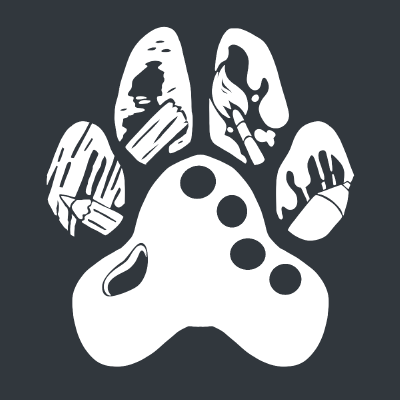

Howdy there, I'm Oak
Full-Stack Web dev, Software developer, and a hobbiest Pentester.
About me
I'm a self-taught developer, I started learning computer science in 2017, and still seek to learn more. I'm currently working for Artifact, as the main Bot developer. As you can admire by my questionable css, I'm a cat lover and generally a dork. This site is a bit wacky, but It's a work in progress. Have fun exploring!